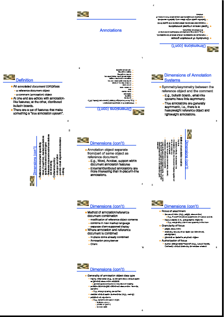

Impose
Imposition arranges one or more existing pages onto another page.
In its simplest form, it's n-up, such as shrinking 4 pages onto 1 to save paper when printing.
It's easy to arrange pages and rotations for booklets.
More sophisticated use of the tool can rearrange and rotate pages to produce complex layouts,
as for folded brochures.
Options
java tool.pdf.Impose [options] PDF-file
- -nup --
Shortcut for common layouts:
2 source pages per new page, 4, 6, 9, 16.
Slides work well with the 2x3 layout given by 6, which automatically applies 90 degree rotation.
Default: 4.
- -dim[ensions] columnsxrows --
specify rows and columns, e.g.,
2x3. Default: 2x2.
- -layout --
provides full control over page sequence and rotation.
In the grid specified by -dimension,
pages are placed into cells until the page fills up, and then a new page and grid is started.
- A regular flow of pages across cells
can be specified simply, with one or two letters:
left-to-right with
l or right-to-left with r,
and top-to-bottom with t or bottom-to-top with b.
The first letter is the overall direction, and the second letter the direction within the overall flow.
For example, lt specifies the common left to right, top to bottom flow.
Default: lt.
- Alternatively, complex sequencing is possible.
In the grid, cell positions are implicitly numbered left to right, top to bottom.
For example, a 2x3 grid is numbered as follows:
1 2
3 4
5 6
Then sequence incoming pages onto the cells with a number sequence
in which the first number of the sequence maps to position 1 in the grid, the second number to position 2, and so on.
For example, you can flow source pages top to bottom in the first column, followed by bottom to top in the second with
the following sequence 1,3,5,6,4,2.
After each number, an optional letter specifies a rotation:
r after number to rotate right (clockwise by 90 degrees), l for left (counterclockwise by 90 degrees), u upside down (180 degrees).
An x leaves that spot in the grid blank.
Layout can spill over an integral number of dimensions.
For example, on 2x2 grid (4 cells), 1,2,3,4,8u,7u,6u,5u.
See below for examples.
- -page range --
selects pages from source PDF.
PDF page numbers refer to physical pages, not logical numbers or the numbers printed on the pages,
and are numbered from 1 to the total number of pages.
A blank page can be inserted with the special case page number of
x.
Pages can be reordered, so if for a booklet's folding you need the last page and first page to be on the same piece of paper,
you can sequence them like so: -page 8,1,2,7,6,3,4,5.
- -cropbox --
use the page cropbox rather than mediabox
- -sep[arator] number --
width of separation lines between pages, or
0 for no lines.
Default: 0.
- -margin --
additional space around all four sides of each page
- -paper paper-size --
specify output paper size.
Default: same size as first page to impose.
- -password password -- password if PDF is encrypted
- -verbose --
displays the layout matrix to help debug complex layouts
Double-sided printing can be done with Split.
The imposition is named with -im appended to the original file name.
Note that imposing drops annotations (including hyperlinks) and bookmarks/outlines.
Examples
1. The default operation is very simple and produces the common case of shrinking 4 source pages to one new page.
java tool.pdf.Impose Annotations.pdf
2. Common paste-ups are conveniently available with -nup.
java tool.pdf.Impose -nup 6 -sep 1 Annotations.pdf
produces
3. Complete control over page sequence and rotation.
java tool.pdf.Impose -verbose -dim 3x5 -paper A4 -layout "x,1,7u,2,8u,3,10l,4,11r,x,12,5,x,6,x" Annotations.pdf
produces the layout matrix
0 1 7
2 8 3
10 4 11
0 12 5
0 6 0
and

4. Create an 8-page booklet on two pieces of paper printed front and back and folded in half.
(Example from Andrew Roach.)
java tool.pdf.Impose -dim 2x1 -page 8,1,2,7,3,6,4,5 docs.pdf
5. Print business cards, by making a grid 4 wide and 10 high and copying the page 40 times.
java tool.pdf.Impose -dim 4x10 -page "1*40" docs.pdf